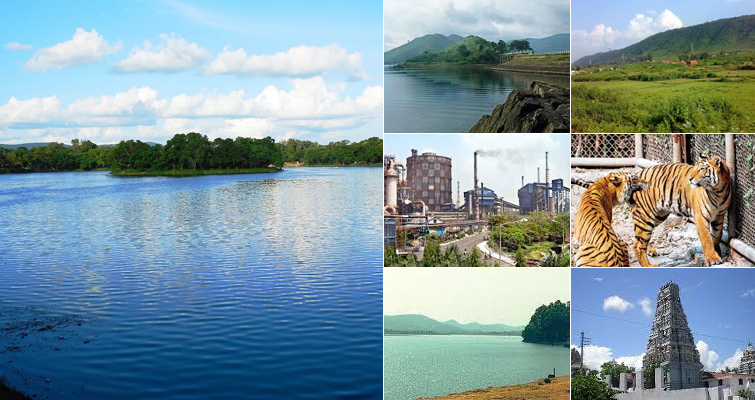
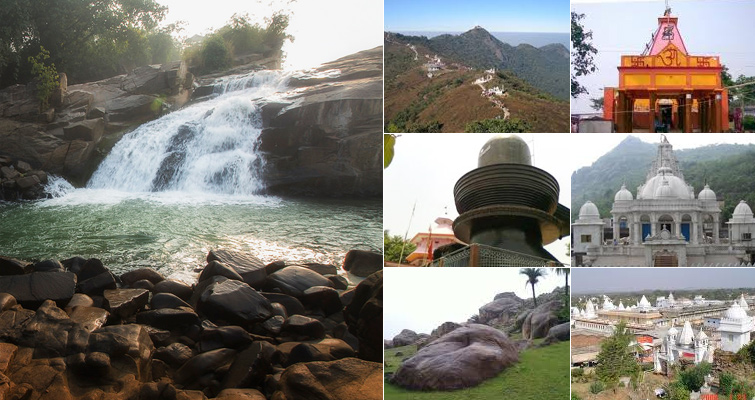

India Tourism
1. Ranchi
 Ranchi is one of the best places to visit in Jharkhand that offers you the divine view of some of the best waterfalls in India. It is the capital of Jharkhand and is known as ‘the City of Waterfalls.’ Ranchi is one place, which is so rich in mineral resources that it is named as the ‘Manchester of the East.’ Surrounded by serene mountains and hills and swamped with heavenly waterfalls, Ranchi never disappoint its tourists and instead offer them the best sojourn to be cherished for lifetime.
Ranchi is one of the best places to visit in Jharkhand that offers you the divine view of some of the best waterfalls in India. It is the capital of Jharkhand and is known as ‘the City of Waterfalls.’ Ranchi is one place, which is so rich in mineral resources that it is named as the ‘Manchester of the East.’ Surrounded by serene mountains and hills and swamped with heavenly waterfalls, Ranchi never disappoint its tourists and instead offer them the best sojourn to be cherished for lifetime.
2. Jamshedpur

‘The Steel City of India’ Jamshedpur is the largest city in Jharkhand and is home to India’s first private iron and steel company ‘Tata Steel.’ This well-planned city has several tourist attractions that offer a great experience to the tourists, especially nature lovers who can seek comfort in exploring the natural beauty of this place. Also, known as an Industrial city, Jamshedpur was founded by Jamsedji Nusserwanji Tata, the great Industrialist and founder of the Tata Group. The city is surrounded by rich greenery and offers plenty of attractions for tourists to have a delightful holidaying experience.
3. Hazaribagh
 This picturesque destination largely contributes to the wildlife tourism in Jharkhand, thanks to its abundant greenery, great hills, and lovely weather. Situated at an altitude of 2019 feet, Hazaribagh is a land of flora and fauna, well known for its health resort. As its name suggests, Hazaribagh means a city of thousand gardens, however, this doesn’t mean the city has just gardens; there are several temples, hills, waterfalls, and wildlife sanctuaries that offer a delightful experience to the tourists.
This picturesque destination largely contributes to the wildlife tourism in Jharkhand, thanks to its abundant greenery, great hills, and lovely weather. Situated at an altitude of 2019 feet, Hazaribagh is a land of flora and fauna, well known for its health resort. As its name suggests, Hazaribagh means a city of thousand gardens, however, this doesn’t mean the city has just gardens; there are several temples, hills, waterfalls, and wildlife sanctuaries that offer a delightful experience to the tourists.
4. Deoghar
 Deoghar is one of the best places to visit in Jharkhand, when it comes to religious tourism. With so many Hindu temples that are mainly dedicated to Lord Shiva, Deoghar promises its tourists a rather joyous holidays, thanks to its abundant natural beauty and tranquil surroundings. Deoghar has so much to see and experience that tourists from far across the country visit this place in a large number to explore its distinctive beauty. Also known for its ancient temples like Baba Baidyanath, which is considered to be one of the twelve ‘Jyotirlingas’ in India, Deoghar promises a divine sojourn to people in search of peace and serenity.
Deoghar is one of the best places to visit in Jharkhand, when it comes to religious tourism. With so many Hindu temples that are mainly dedicated to Lord Shiva, Deoghar promises its tourists a rather joyous holidays, thanks to its abundant natural beauty and tranquil surroundings. Deoghar has so much to see and experience that tourists from far across the country visit this place in a large number to explore its distinctive beauty. Also known for its ancient temples like Baba Baidyanath, which is considered to be one of the twelve ‘Jyotirlingas’ in India, Deoghar promises a divine sojourn to people in search of peace and serenity.
5. Giridih

Once a part of Hazaribagh, Giridih is now a separate city, which came into existence in 1972. It is known for its mining towns and verdant hills that are covered with lush green forests with a major plantation of Sal tree, bamboo, Semal, Mahua, and Palash. Also known as the ‘Land of Hills,’ Giridih is widely visited by Jain pilgrims and is often termed as ‘The land of Jain Pilgrims.’ There are several Jain Temples and various Jain buildings & sites in Giridih that makes it a desirable destination amid nature lovers and pilgrims. Beautiful valleys, charming hills, dams, and temples in Giridih contribute in the tourism in Jharkhand.